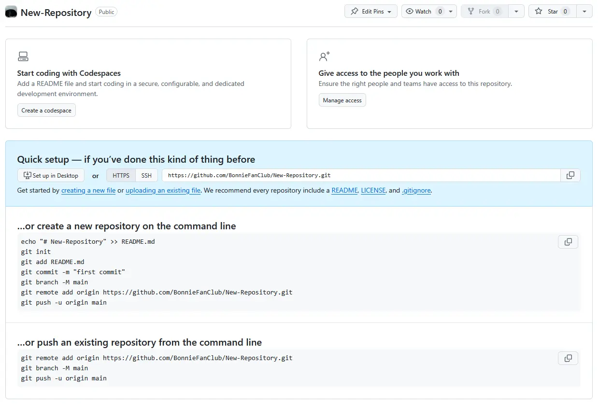

Relier au repository
Pour relier notre projet local et notre repo en ligne, il faut initier notre dépôt local grâce à la commande suivante :
git init sert à initialiser un nouveau dépôt Git local.
git add sert à ajouter des fichiers à la zone de préparation (staging area). Il faut crée un README.md
git commit sert à valider les modifications ajoutées avec un message descriptif.
git branch -M main sert à renommer la branche par défaut en "main".
git remote add origin sert à lier le dépôt local au dépôt distant en spécifiant son URL.
git push -u origin main sert à envoyer les commits locaux vers la branche distante "main".
